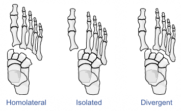

Classification
-
Quenu and Kuss: based on patterns of injury
- Homolateral: all five MTs displaced in the same direction
- Isolated: one or two MTs displaced from the others
- Divergent: displacement of the MTs in both the sagittal and coronal plane

Quenu and Kuss classification
- Myerson:
Type A: Total incongruity with lateral or dorsoplantar dislocation of all MTs
Type B1: Partial incongruity with medial dislocation of the 1st MT
Type B2: Partial incongruity with lateral dislocation of all of the lesser MTs
Type C1: Divergent with displacement of any of the lesser MTs laterally and the 1st MT medially
Type C1: Divergent with displacement of all of the lesser MTs laterally and the 1st MT medially